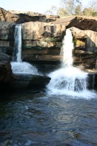
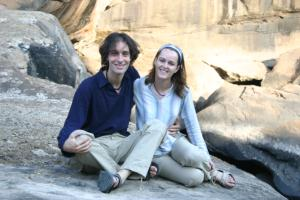
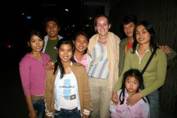

Le 1er janvier 2005,
 Aujourd’hui, nous partons en expédition pour aller voir de très belles cascades à l’extérieur de la ville. D’après les photos que nous avons pu voir, ça vaut vraiment le déplacement ! Cette fameuse cascade se trouve à un peu plus de 70 km de Phitsnalulok, nous décidons donc d’y aller en bus. Le bus est archi-complet avec une tonne de personnes debout dans l’allée. Peu importe, on nous dit de monter et on nous trouve des places assises sur le moteur juste à côté du chauffeur, à quelques centimètres du pare-brise. Pourvu qu’il ne freine pas trop fort ! Ceci dit, le bus est tellement bondé qu’il peine un peu à rouler vite de toute façon... Tant mieux ! Il a d’ailleurs carrément du mal dans les cotes... Et nous sentons bien le moteur chauffer sous nos fesses qui commencent à griller. Une heure et demi plus tard, on nous débarque a 2 km de la cascade... Il va falloir marcher !  Apres une bonne demi-heure de montée et de descente, nous atteignons enfin notre but. Quelle déception ! Au lieu de la magnifique cascade sur quatre étages que nous nous imaginions, nous nous retrouvons devant deux ou trois filets d’eau ridicules... Et oui, nous sommes en saison sèche... Les photos que nous avons pu voir ont du être prises durant la mousson ! Bon, nous sommes quand même en pleine mature, c’est très agréable, nous n’avons pas tout perdu...
Je commence à avoir mal au crane, je dois accuser le coup de la soirée du nouvel an d’hier. Ca me coûte de refaire les 2 km a pieds en sens inverse pour revenir à la station de bus. Juste a ce moment-la, un pick-up rempli de Thaïlandais assis a l’arrière s’arrête et nous invite a monter. Génial, ce sera ça de moins à faire à pieds ! Nous ne nous le faisons pas dire deux fois et sautons dans la camionnette ! Ils nous laissent à l’entrée du parc pour attendre notre bus. Une demi-heure plus tard, toujours pas de bus en vue... Nous commençons à trouver le temps long ! La nuit s’apprête à tomber et il ne fait pas très chaud. A un moment donné, un autre pick-up (il n’y a que ça ici...) s’arrête devant nous et le conducteur nous demande s’il peut nous déposer quelque part. Nous voila entassés à l’arrière du pick-up, dans le vent, accompagnés de deux jeunes filles (certainement les filles du conducteur) et de gros sacs de nourriture et de vêtements, sur l’autoroute a plus de 100 km/heure. La mère ainsi que deux autres filles sont serrées à l’intérieur, à côté du conducteur. Nous commençons à avoir bien froids dans le vent à cette vitesse...  Les jeunes filles partagent avec nous leur manteau et le père nous offre du vin pour nous réchauffer. Ils sont vraiment adorables ! La conversation n’est pas facile étant donné qu’ils ne parlent pas un mot d’anglais mais leurs sourires et leur gentillesse font chauds au cœur. Le père téléphone même à sa sœur qui parle anglais avec son portable, pour qu’elle puisse nous demander dans quel hôtel nous nous trouvons. Ils veulent nous déposer juste devant ! Et toute cette gentillesse est complètement gratuite ! J’ai cru comprendre qu’ils avaient fait un détour pour nous amener jusqu’à Phitsanulok, ce n’était pas spécialement leur route... Je suis vraiment touchée par tant de générosité à notre égard... Est ce qu’en France, beaucoup de personnes s’arrêteraient au milieu de la route, alors que leur voiture est déjà pleine, pour faire un détour et ramener des gens chez eux alors que ces derniers ne faisaient même pas du stop ? Nous leur proposons de les inviter à manger, mais ils déclinent l’invitation, ils doivent rentrer chez eux...
Le soir, nous retrouvons Sylvania et Ivo pour dîner. Ils ont l’air fatigué tous les deux, ils accusent également le contre-coup du réveillon. Tu m’étonnes... Avec tout ce qu’ils ont picolé ! Nous dînons sur un très beau restaurant flottant. Le cadre est magnifique mais la nourriture est quelconque... Nous avons mieux mangé hier sur le marché de nuit ! Nous passons tout de même une très bonne soirée à rire et à nous amuser et puis tout le monde au lit !!
Eve-Laure
Gros bisous de france ou vous nous faites toujours réver. Profitez bien.
Camille et pat
{kind=link}
{kind=link}
{kind=link}